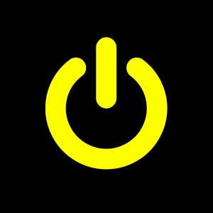

Colors listed in order of dominance: hex color followed by number of entries

K=3, Kmeans++, Mean, RGB, No cropping
#E8E904 932
#181901 410
#818201 89
K=3, Kmeans++, Median, RGB, No cropping
#F9FB03 883
#171A00 423
#A1A201 125
K=3, Kmeans++, Median, RGB, Cropping center
#FCFD07 2990
#050404 1008
#8E8F2D 242
K=3, Kmeans++, Mean, RGB, No cropping
#1F1B14 669
#E5C78B 584
#736955 153
K=3, Kmeans++, Median, RGB, No cropping
#211D13 704
#F5CE86 552
#868168 150
K=3, Kmeans++, Median, RGB, Cropping center
#F4EFE8 1342
#C7BA8A 1011
#35342C 927